Aula 1:
Introdução à disciplina de Controle Digital
9 de agosto de 2024
O que é um sistema de controle?

Garantir desempenho e segurança!
Naves espaciais e aviões
 |  |
Ex: controle de atitude
Geração de energia
 |
Ex: controle de potência gerada
Indústria
 |  |
Ex: controle de temperatura, vazão, nível...
Setor automotivo
 Fonte: https://salaodocarro.com.br/como-funciona/controle-de-tracao.html | 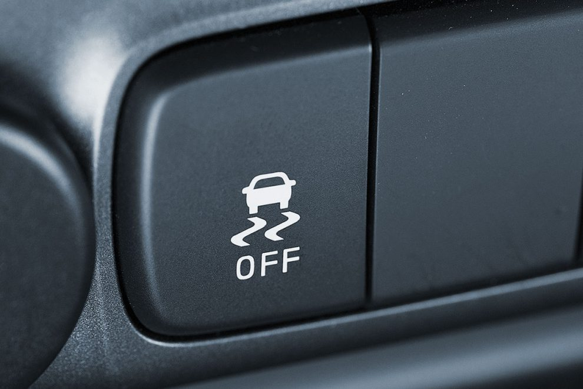 |
Medicina e Biologia
 Fonte: IEEE Control Systems Magazine https://doi.org/10.1109/MCS.2017.2766322 |  Fonte: https://www.sare.org/publications/manage-insects-on-your-farm/beneficial-agents-on-the-farm/predators-2/ |
Tomada de decisão no Mercado financeiro e Economia
 |
Pêndulo Invertido:
https://www.youtube.com/watch?v=4kIrcELC79o
Pêndulo Invertido:
https://www.youtube.com/watch?v=4kIrcELC79o
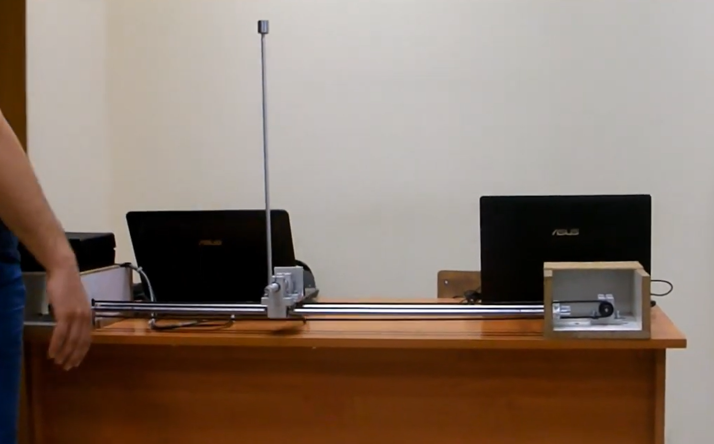
Pêndulo Invertido:
https://www.youtube.com/watch?v=4kIrcELC79o

Pêndulo Invertido:
https://www.youtube.com/watch?v=4kIrcELC79o

Self-balanced robot:
https://www.youtube.com/watch?v=38KVxZnBDZc
Self-balanced robot:
https://www.youtube.com/watch?v=38KVxZnBDZc

Self-balanced robot:
https://www.youtube.com/watch?v=38KVxZnBDZc

Self-balanced robot:
https://www.youtube.com/watch?v=38KVxZnBDZc
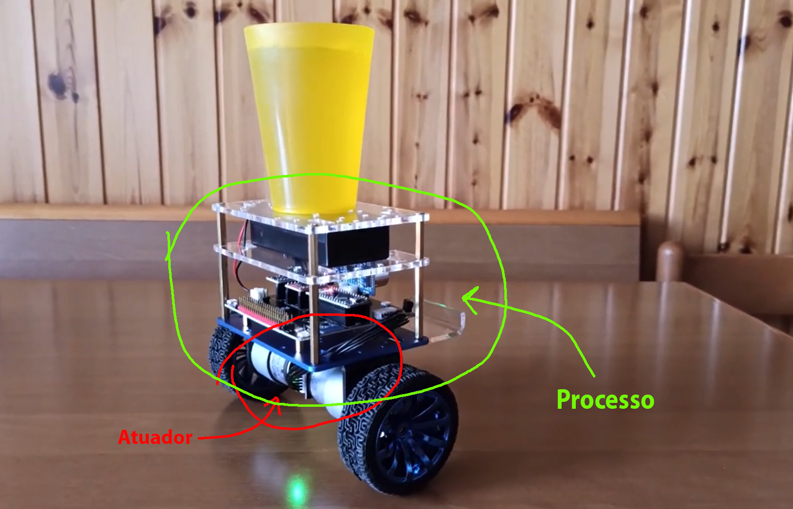
Self-balanced robot:
https://www.youtube.com/watch?v=38KVxZnBDZc

Self-balanced robot:
https://www.youtube.com/watch?v=38KVxZnBDZc


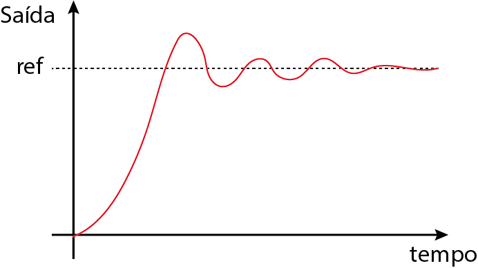
Tempo de súbida $(t_r)$

Sobresinal $(M_p)$
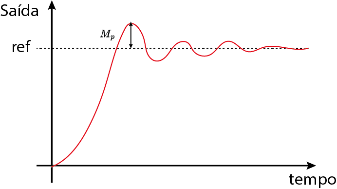Tempo de acomodação $(t_s)$

Erro $(\epsilon)$
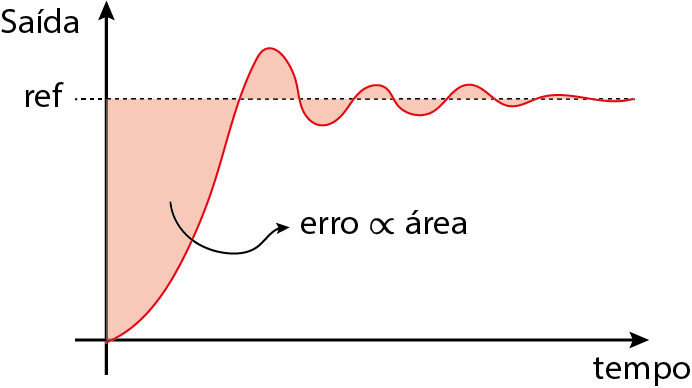Analógico vs Digital
 | |
| Resistores, capacitores, indutores e OpAmp. | Computador digital ($\mu C$) |
Interface analógica/digital

Interface analógica/digital
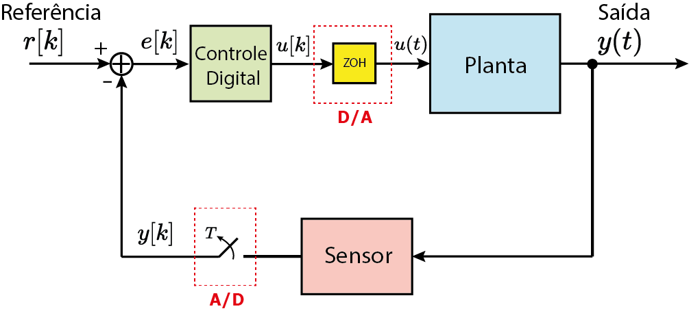
Interface analógica/digital

Interface analógica/digital
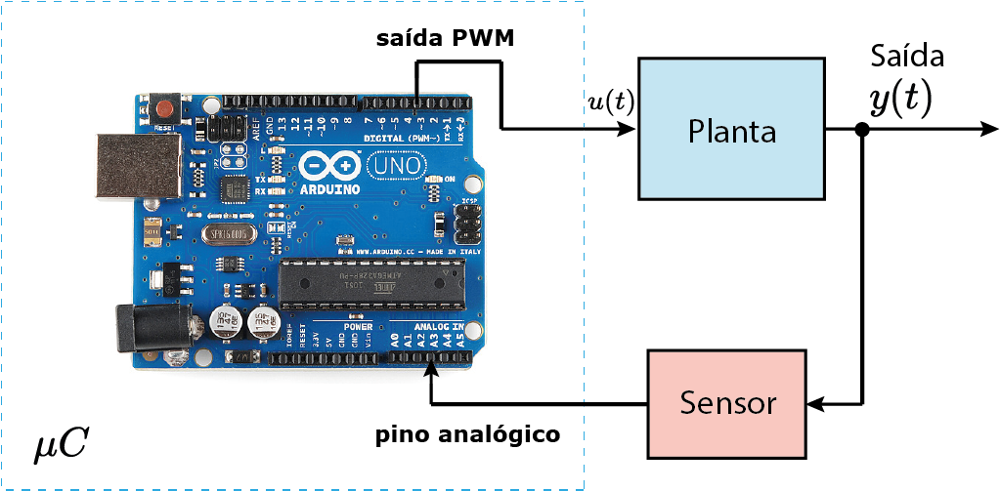


Transformada Z
$$X(z)=\sum_{k=-\infty}^\infty x[k]z^{-k}$$- Simulações computacionais;


- Direto na planta (de forma segura);

On-off
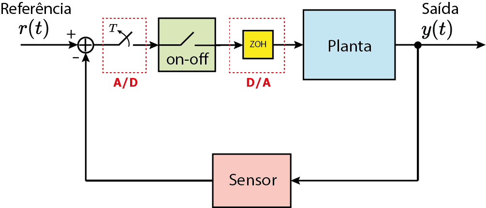Utilizado em geladeiras, ar-condicionados, caixas de água etc
On-off

PID
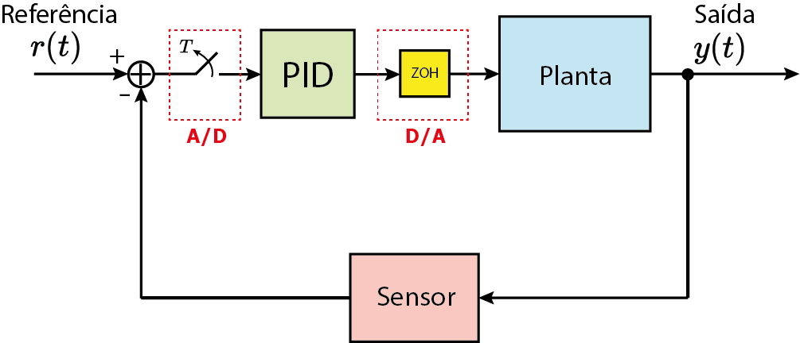PID (tempo contínuo)
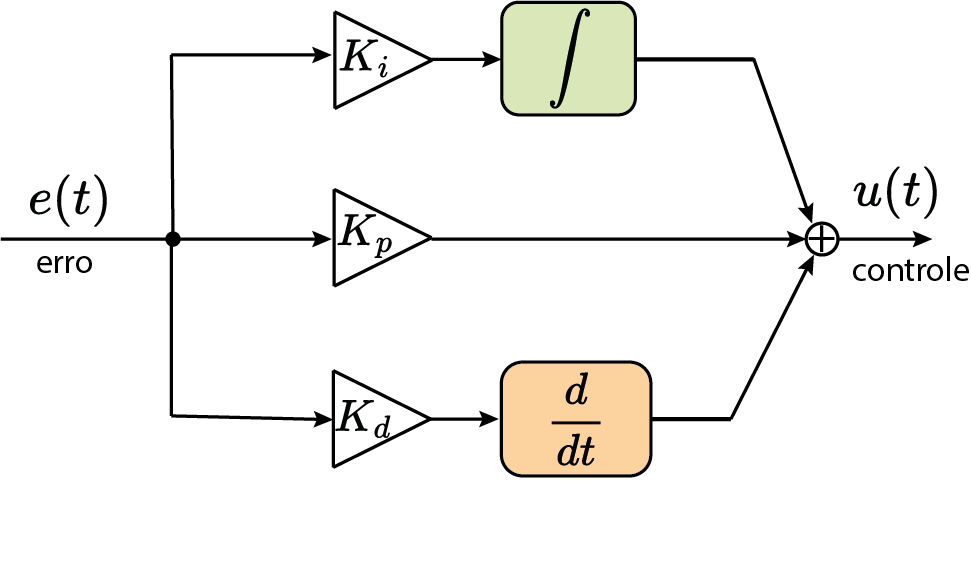$C(s)=K_p+K_i\frac{1}{s}+K_ds$
PID (tempo discreto)

$C(z)=K_p+K_i\frac{1}{1-z^{-1}}+K_d(1-z^{-1})$
Teorema da amostragem